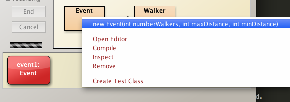
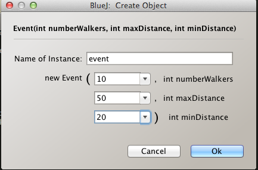
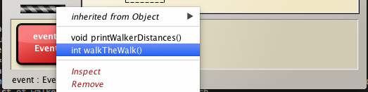
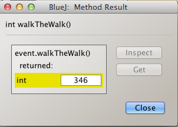
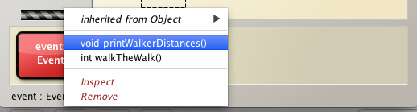

Objectives
These are the solutions to the second lab in the session More sophisticated behaviour that deals with class and instance variables and methods.
Exercises
Exercise 1
You are provided with partially-completed classes named
- Event
- Walker
The Walker class has
- An instance variable that records the miles walked by a specific walker
- A class variable that keeps a running total of all the kilometers walked by all the walkers (Walker objects) in a particular Event (object)
- a getter for the above field
- A constructor with a parameter to indicate the number of miles walked by an individual walker.
The Event class has
- a list of walkers
- a means of randomly generating the distance to be walked by an individual walker
- a prescribed minimum and maximum distance to be walked
- a constructor with a parameter that sets the number of walkers and max and min distances
- a public method walkTheWalk to
- simulate the walk event and
- return the cumulative number of miles walked, that is, the sum of the miles that each walker covered.
- a public method to print a list of walkers and the miles walked by each.
Here are the skeletons of the classes to be developed:
Walker
public class Walker
{
//provide class variable to record cumulative miles walked
//provide instance variable to record miles walked by specific walker
public Walker(int milesWalked)
{
}
//provide getters for both variables
}
Event
import java.util.ArrayList;
import java.util.Random;
public class Event
{
//fields
public Event(int numberWalkers, int maxDistance, int minDistance)
{
//initialize fields
}
public int walkTheWalk()
{
for(int i=0; i < numberWalkers; i += 1)
{
//generate random distance in the range [minDistance, maxDistance]
//create walker
//add walker to list
}
//return total miles walked by all walkers
}
public void printWalkerDistance()
{
//
}
}
Exercise 1 Solution
import java.util.ArrayList;
import java.util.Random;
public class Event
{
private ArrayList<Walker> walkers = new ArrayList<>();
private Random distance = new Random();
int maxDistance;//miles
int minDistance;//miles
int numberWalkers;
public Event(int numberWalkers, int maxDistance, int minDistance)
{
this.maxDistance = maxDistance;
this.minDistance = minDistance;
this.numberWalkers = numberWalkers;
}
public int walkTheWalk()
{
for(int i=0; i < numberWalkers; i += 1)
{
int toWalk = minDistance + distance.nextInt(maxDistance - minDistance);
walkers.add(new Walker(toWalk));
}
return Walker.getCumulativeMiles();
}
public void printWalkerDistances()
{
System.out.println("Walker Distance");
for(int i = 0; i < walkers.size(); i += 1)
{
System.out.println(" "+i+" "+walkers.get(i).getMilesWalked());
}
}
}
public class Walker
{
private static int cumulativeMiles;
private int milesWalked;
public Walker(int milesWalked)
{
cumulativeMiles += milesWalked;
this.milesWalked = milesWalked;
}
public static int getCumulativeMiles()
{
return cumulativeMiles;
}
public int getMilesWalked()
{
return milesWalked;
}
}
Exercises
Exercise 2
Test the application in Exercise 1 as follows:
-
Write method printWalkerDistances() that:
- Prints two columns of data
- Columm 1: Walker (the walker number, example 0, 1, 2....number walkers -1)
- Column 2: Distance (the distance walked by each walker)
- See Figure 1 for typical output.
- Prints two columns of data
-
Write method printEventData() that prints the:
- number of walkers
- maximum and minimum distance attributes
- the cumulative distance walked by all walkers in the event
- enforce a constraint that the method prints data only following invocation of walkTheWalk
- See Figure 2 for typical output
-
Instantiate Event event with these parameters;
- number walkers 10
- maximum distance 50
- minimum distance 20
-
Invoke the methods
- printEventData
- invocation should fail to print data and trigger a warning to first invoke walkTheWalk
- walkTheWalk
- printEventData
- printWalkerDistances
- printEventData
Check the cumulative miles walked (as shown Figure 1) against the sum of the distances output (as shown Figure 2).


Exercise 2 Solution
Here is the method printWalkerDistances
public void printWalkerDistances()
{
System.out.println("Walker Distance");
for(int i = 0; i < walkers.size(); i += 1)
{
System.out.println(" "+i+" " + walkers.get(i).getMilesWalked());
}
}
And here is printEventData
public void printEventData()
{
if(walkers.size() > 0)
{
System.out.println("Number of walkers: " + numberWalkers);
System.out.println("Maximum & minimum distances specified: " + "["+minDistance+", "+maxDistance+"]");
System.out.println("Cumulative miles walked: " + Walker.getCumulativeMiles());
}
else
{
System.out.println("Walk the Walk before accessing data");
}
}
Notice in printEventData that we obtain the cumulative miles walked using a static method call:
- Walker.getCumulativeMiles()
But in printWalkerDistances we obtain the individual walker's distance by invoking getMilesWalked on the specific Walker object:
- walkers.get(i).getMilesWalked()
The last expression is equivalent to
Walker walker = walkers.get(i);
walker.getMilesWalked();
- Select Event class diagram and invoke overloaded constructor 
- Enter parameters, for example,
- number walkers 10
- maximum distance 50
- minimum distance 20 
- Invoke walkTheWalk on the Event event object 
- The cumulative miles walked by all the walkers is returned 
- Invoke printWalkerDistances on Event event 
- Here's the list
To conclude, create a new Event object with parameters as above or of your choosing and check the print methods you've developed:
- Invoke the methods
- printEventData
- invocation should fail to print data and trigger a warning to first invoke walkTheWalk
- walkTheWalk
- printEventData
- printWalkerDistances
- printEventData
Satisfy yourself that all outputs are correct.